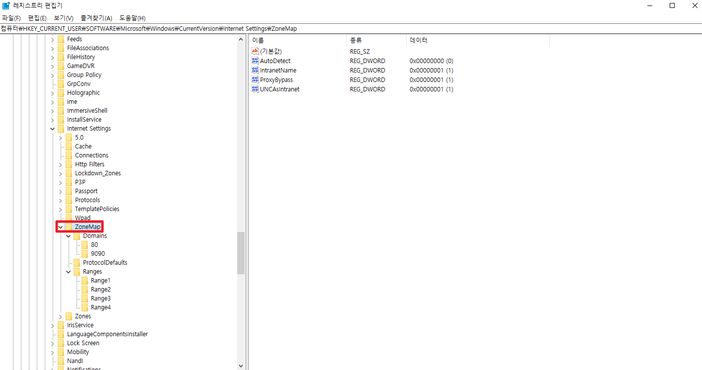

개인 pc에서 GNI 접속 시 참고사항
'신뢰할 수 있는 사이트' 여러번 입력 시 이미 있다고 메세지 나와야함
계속 들어갈 시 '레지스트리 편집기'에서 Zones map 삭제해야함 -> 윤이정님한테 문의
24.05.16 그냥 ZoneMap 폴더 자체를 우클릭해서 삭제하면 된다

'신뢰할 수 있는 사이트' 여러번 입력 시 이미 있다고 메세지 나와야함
계속 들어갈 시 '레지스트리 편집기'에서 Zones map 삭제해야함 -> 윤이정님한테 문의
24.05.16 그냥 ZoneMap 폴더 자체를 우클릭해서 삭제하면 된다
